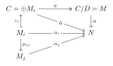
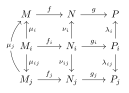
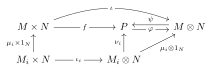

Chapter 2 Modules
2.1
Show that \((\mathbb{Z}/m\mathbb{Z}) \otimes_{\mathbb{Z}} (\mathbb{Z}/n\mathbb{Z}) = 0\) if \(m, n\) are coprime.
Proof: We show that \(\mathbb{Z}_{m}\otimes_{\mathbb{Z}}\mathbb{Z}_{n}\cong \mathbb{Z}_{m} /n\mathbb{Z}_{m}\cong \mathbb{Z}_{(m,n)}\):
Consider \(f:\mathbb{Z}_{m}\times \mathbb{Z}_{n}\to \mathbb{Z}_{m} /n\mathbb{Z}_{m},(\bar{a},\bar{b})\mapsto ab+n\mathbb{Z}_{m}\), then \(f\) is well-defined and bilinear. Hence \(f\) induces a \(\mathbb{Z}-\)module homomorphism \(\alpha:\mathbb{Z}_{m}\otimes_{\mathbb{Z}}\mathbb{Z}_{n}\to \mathbb{Z}_{m} /n\mathbb{Z}_{m}\) such that \(\alpha(\bar{a}⊗ \bar{b})=ab+n\mathbb{Z}_{m}\). Consider \(g:\mathbb{Z}_{m}\to \mathbb{Z}_{m}\otimes_{\mathbb{Z}}\mathbb{Z}_{n},\bar{a}\mapsto \bar{a}\otimes 1\), then \(n\mathbb{Z}_{m}\subset \mathrm{Ker}g\) so \(g\) induces a homomorphism \(\beta:\mathbb{Z}_{m} /n\mathbb{Z}_{m}\to \mathbb{Z}_{m}\otimes_{\mathbb{Z}}\mathbb{Z}_{n}\) such that \(\beta(\bar{a}+n\mathbb{Z}_{m})=\bar{a}\otimes 1\). We can verify that \(\alpha\beta=1_{\mathbb{Z}_{m} /n\mathbb{Z}_{m}}\) and \(\beta\alpha=1_{\mathbb{Z}_{m}\otimes_{\mathbb{Z}}\mathbb{Z}_{n}}\), hence \(\alpha\) is an isomorphism and \(\mathbb{Z}_{m}\otimes_{\mathbb{Z}}\mathbb{Z}_{n}\cong \mathbb{Z}_{m} /n\mathbb{Z}_{m}\cong \mathbb{Z}_{(m,n)}\).
2.2
Let \(A\) be a ring, \(\mathfrak{a}\) an ideal, \(M\) an \(A\)-module. Show that \((A/\mathfrak{a}) \otimes_A M\) is isomorphic to \(M/\mathfrak{a}M\).
Proof: The sequence \(0\to \mathfrak{a}\to A\to A /\mathfrak{a}\to 0\) is exact. By right exactness of \(-\otimes_{A}M\), \(\mathfrak{a}\otimes_{A}M\stackrel{f}{\to} A\otimes_{A}M\to A /\mathfrak{a}\otimes_{A}M\to 0\) is exact. Hence \(A /\mathfrak{a}\otimes_{A}M\cong(A\otimes_{A}M) /\mathrm{Im}f\). Since \(\varphi:A\otimes_{A}M\cong M,a\otimes m\mapsto am\) is an isomorphism, and \(\varphi f(\mathfrak{a}\otimes_{A}M)=\mathfrak{a}M\), we obtain
$$
(A /\mathfrak{a})\otimes_{A}M\cong (A \otimes_{A}M) /\mathrm{Im}f\cong M /\mathfrak{a}M.
$$
2.3
Let \(A\) be a local ring, \(M\) and \(N\) finitely generated \(A\)-modules. Prove that if \(M \otimes N = 0\), then \(M = 0\) or \(N = 0\).
Proof: Let \(\mathfrak{m}\) be the unique maximal ideal, and \(k=A /\mathfrak{m}\) be a field. Let \(M_{k}=k\otimes_{A}M\cong M /\mathfrak{m}M\) by Exercise2.2, then
\(0=(M\otimes_{A}N)_{k}\cong(k \otimes_{A} k)\otimes_{A}M\otimes_{A}N\cong M_{k}\otimes_{k}N_{k}.\)
(Clearly \(k\otimes_{A}k\cong k\) by \(x\otimes y\mapsto xy\) and \(x\mapsto x\otimes 1\)).
Since \(M_{k},N_{k}\) are both vector spaces over \(k\), they are both free, and either \(M_{k}=0\) or \(N_{k}=0\).
Suppose \(M_{k}=0\) then \(M=\mathfrak{m}M\) where \(\mathfrak{m}=\mathfrak{R}\) is the Jacobson radical (since \(A\) is local). \(M\) is finitely generated so by Nakayama's lemma \(M=0\).
2.4
Let \(M_i\) (\(i \in I\)) be any family of \(A\)-modules, and let \(M\) be their direct sum. Prove that \(M\) is flat \(\Leftrightarrow\) each \(M_i\) is flat.
Proof: Take any \(f:N^{\prime}\to N\) injective. Since \(N^{\prime}\otimes_{A}M\cong \bigoplus_{i\in I}(N^{\prime}\otimes_{A}M_{i})\), consider the embeddings \(\iota_{i}:M_{i}\to M\) and \(\iota^{\prime}_{i}:N^{\prime}\otimes_{A}M_{i}\to N^{\prime}\otimes_{A}M\), then \(\mathrm{Ker} (f\otimes 1_{M})=\bigoplus_{i\in I}^{}{\iota_{i}^{\prime}(\mathrm{Ker} (f\otimes 1_{M_{i}}))}\), so \(f\otimes 1_{M}\) is injective iff \(f\otimes 1_{M_{i}}\) are injective. Hence \(M\) is flat iff \(M_{i}\) are flat.
2.5
Let \(A[x]\) be the ring of polynomials in one indeterminate over a ring \(A\). Prove that \(A[x]\) is a flat \(A\)-algebra.
Proof: \(A[x]\) is a free \(A-\)module so it is flat.
2.6
For any \(A\)-module, let \(M[x]\) denote the set of all polynomials in \(x\) with coefficients in \(M\), that is to say expressions of the form
$$
m_0 + m_1x + \cdots + m_rx^r \quad (m_i \in M).
$$
Defining the product of an element of \(A[x]\) and an element of \(M[x]\) in the obvious way, show that \(M[x]\) is an \(A[x]\)-module.
Show that \(M[x] \cong A[x] \otimes_A M\).
Proof: Define the \(A[x]-\)module structure as \(\sum_{i=0}^{n}{a_{i}x^{i}}\cdot \sum_{j=0}^{p}{m_{j}x^{j}}=\sum_{i=0}^{n+p}{m^{\prime}_{i}x^{i}}\) where \(m_{i}^{\prime}=\sum_{j+k=i}^{}{a_{j}\cdot m_{k}}\).
Consider \(f:A[x]\times M\to M[x],\left( \sum_{i=0}^{n}{a_{i}x^{i}},m \right)\mapsto \sum_{i=0}^{n}{a_{i}mx^{i}}\) then \(f\) is well-defined and bilinear, so it induces an \(A-\)module homomorphism \(\alpha:A[x]\otimes_{A}M\to M[x]\) such that \(\alpha(\phi \otimes m)=m\phi\). Let \(\beta:M[x]\to A[x]\otimes_{A}M\), \(\beta(\sum_{i=0}^{n}{m_{i}x^{i}})=\sum_{i=0}^{n}{x^{i}\otimes m_{i}}\) then \(\beta\) is an \(A-\)module homomorphism. Verify that \(\beta\alpha=1_{A[x]\otimes_{A}M}\) for the generators of \(A[x]\otimes_{A}M\) and \(\alpha\beta=1_{M[x]}\). Hence \(\alpha,\beta\) are isomorphisms and \(M[x]\cong A[x]\otimes_{A}M\).
2.7
Let \(\mathfrak{p}\) be a prime ideal in \(A\). Show that \(\mathfrak{p}[x]\) is a prime ideal in \(A[x]\). If \(\mathfrak{m}\) is a maximal ideal in \(A\), is \(\mathfrak{m}[x]\) a maximal ideal in \(A[x]\)?
Proof: Note that \(A[x] /\mathfrak{a}[x]\cong (A\otimes_{A}A[x]) /(\mathfrak{a}\otimes_{A}A[x])\cong A /\mathfrak{a}\otimes_{A}A[x]\cong (A /\mathfrak{a})[x]\) by exactness of \(-⊗_{A} A[x]\) and Exercise2.6.
Hence \(\mathfrak{a}[x]\) is prime iff \((A /\mathfrak{a})[x]\) is an integral domain, and \(\mathfrak{a}[x]\) is maximal iff \((A /\mathfrak{a})[x]\) is a field. If \(\mathfrak{p}\subset A\) is prime, clearly \(A /\mathfrak{p}\) is an integral domain, so \((A /\mathfrak{p})[x]\) is also an integral domain. However, if \(\mathfrak{m}\subset A\) is maximal, \(k[x]=(A /\mathfrak{m})[x]\) is generally not a field, e.g. \(\mathbb{R}[x]\) is not a field.
2.8
i) If \(M\) and \(N\) are flat \(A\)-modules, then so is \(M \otimes_A N\).
ii) If \(B\) is a flat \(A\)-algebra and \(N\) is a flat \(B\)-module, then \(N\) is flat as an \(A\)-module.
Proof: (i) Note that \(-\otimes_{A}(M\otimes_{A}N)\) is naturally isomorphic to the composition of the two exact functors \(-\otimes_{A}M\) and \(-\otimes_{A}N\), hence it is exact and \(M\otimes_{A}N\) is flat.
(ii) Likewise \(-\otimes_{A}N\) is naturally isomorphic to the composition of the two exact functors \(-\otimes_{A}B\) and \(-\otimes_{B}N\), since \(N\cong B\otimes_{B}N\) naturally as \(B-\)modules. Hence \(N\) is a flat \(A-\)module.
2.9
Let \(0 \to M' \to M \to M'' \to 0\) be an exact sequence of \(A\)-modules. If \(M'\) and \(M''\) are finitely generated, then so is \(M\).
Proof: By exactness we can view \(M^{\prime}\subset M\) and \(M^{\prime\prime}=M /M^{\prime}\). Suppose \(M^{\prime\prime}=(m_{1}^{\prime\prime},\cdots,m_{k}^{\prime\prime})\) and \(M^{\prime}=(m_{1}^{\prime},\cdots,m_{t}^{\prime})\), and take \(m_{i}\in M\) such that \(\pi(m_{i})=m_{i}^{\prime\prime}\). Then for any \(a\in M\), \(\pi(a)=\sum_{}^{}{c_{i}m_{i}^{\prime\prime}}\in M^{\prime\prime}\) so \(a-\sum_{}^{}{c_{i}m_{i}}\in M^{\prime}=(m_{1}^{\prime},\cdots,m_{t}^{\prime})\). Hence \(M=(m_{1},\cdots,m_{k},m_{1}^{\prime},\cdots,m_{t}^{\prime})\) is finitely generated.
2.10
Let \(A\) be a ring, \(\mathfrak{a}\) an ideal contained in the Jacobson radical of \(A\); let \(M\) be an \(A\)-module and \(N\) a finitely generated \(A\)-module, and let \(u: M \to N\) be a homomorphism. If the induced homomorphism \(M/\mathfrak{a}M \to N/\mathfrak{a}N\) is surjective, then \(u\) is surjective.
Proof: Since \(M /\mathfrak{a}M\to N/\mathfrak{a}N\) is surjective, \(\mathrm{Im}u+\mathfrak{a}N=N\), so \((\mathfrak{a} N+\mathrm{Im}u) /\mathrm{Im}u=N /\mathrm{Im}u\). \(N /\mathrm{Im}u\) is finitely generated and \(\mathfrak{a}\subset \mathfrak{R}\) so by Nakayama's lemma \(N /\mathrm{Im}u=0\) and \(u\) is surjective.
2.11
Let \(A\) be a ring \(\neq 0\). Show that \(A^m \cong A^n \Rightarrow m = n\).
If \(\phi: A^m \to A^n\) is surjective, then \(m \geqslant n\).
If \(\phi: A^m \to A^n\) is injective, is it always the case that \(m \leqslant n\)?
Proof: (a)(b) If \(\phi:A^{m}\to A^{n}\) is surjective, then \(\mathrm{Ker}\phi\to A^{m}\to A^{n}\to 0\) is an exact sequence. Take a maximal ideal \(\mathfrak{m}\subset A\), and consider the field \(k=A/\mathfrak{m}\). By right-exactness of tensoring, \(\phi \otimes 1_{k}:A^{m}\otimes_{A}k\to A^{n}\otimes_{A}k\) is surjective. Since \(k^{m}\cong(A\otimes_{A}k)^{m}\cong A^{m}\otimes_{A}k\) as \(A-\)modules, we obtain a surjective homomorphism \(k^{m}\to k^{n}\), so by knowledge of linear algebra \(m\geqslant n\).
If \(\phi\) is bijective, consider the surjective homomorphism \(\phi ^{-1}:A^{n}\to A^{m}\), then \(m\geqslant n\) and \(m\leqslant n\) so \(m=n\).
(c) (Proof from MSE)
Suppose \(\phi:A^{m}\to A^{n}\) is injective and \(m>n\), consider the embedding \(\iota:A^{n}=A^{n}\times 0^{m-n}\to A^{m}\), and \(\psi=\iota\phi\) which is also injective. Denote \(\pi:A^{m}\to A,(a_{i})\mapsto a_{m}\) as the projection. By Hamilton-Cayley theorem, there exists \(n\geqslant 1\) and \(a_{1},\cdots,a_{n}\in A\) such that
$$
\psi ^{n}+a_{1}\psi ^{n-1}+\cdots+a_{n-1}\psi+a_{n}id=0\in \mathrm{End}(A^{m}).
$$
Take the least such \(n\geqslant 1\), then \(\pi\psi=0\) implies \(0=\pi(\psi ^{n}+a_{1}\psi ^{n-1}+\cdots+a_{n}id)\) so \(a_{n}=0\). Since \(\psi\) is injective, \(\psi(\psi ^{n-1}+a_{1}\psi ^{n-2}+\cdots+a_{n-1})=0\) implies \(\psi ^{n-1}+a_{1}\psi ^{n-2}+\cdots+a_{n-1}=0\), a contradiction to minimality of \(n\).
Another proof: If \(\phi:A^{m}\to A^{n}\) is injective and \(m>n\), then the exterior algebra \(\bigwedge_{i=1}^{m}A^{n}=0\) since by knowledge of linear algebra it has dimension \(\binom{n}{m}\). Take a basis \(\{ e_{1},\cdots,e_{m} \}\) of \(A^{m}\), then \(\phi(e_{1}),\cdots,\phi(e_{m})\) are linearly independent, so \(\phi(e_{1})\wedge\cdots\wedge\phi(e_{m})\neq 0\), a contradiction.
2.12
Let \(M\) be a finitely generated \(A\)-module and \(\phi: M \to A^n\) a surjective homomorphism. Show that \(\text{Ker}(\phi)\) is finitely generated.
Proof: Let \(\{ e_{1},\cdots,e_{n} \}\) be a basis of \(A^{n}\) and take \(u_{i}\in M\) such that \(\phi(u_{i})=e_{i}\). Then \(\mathrm{Ker}\phi\cap (u_{1},\cdots,u_{n})=0\) since \(\sum_{}^{}{c_{i}u_{i}}\in \mathrm{Ker}\phi\implies \sum_{}^{}{c_{i}e_{i}}=0\implies c_{i}=0\). For any \(a\in M\), take \(c_{i}\) such that \(\phi(a)=\sum_{}^{}{c_{i}e_{i}}\), then \(a-\sum_{}^{}{c_{i}u_{i}}\in \mathrm{Ker}\phi\), so \(M=(u_{1},\cdots,u_{n})+\mathrm{Ker}\phi\). Hence \(M=(u_{1},\cdots,u_{n})\oplus \mathrm{Ker}\phi\), and \(\mathrm{Ker}\phi\) is finitely generated since it is the homomorphic image of \(M\).
2.13
Let \(f: A \to B\) be a ring homomorphism, and let \(N\) be a \(B\)-module. Regarding \(N\) as an \(A\)-module by restriction of scalars, form the \(B\)-module \(N_B = B \otimes_A N\). Show that the homomorphism \(g: N \to N_B\) which maps \(y\) to \(1 \otimes y\) is injective and that \(g(N)\) is a direct summand of \(N_B\).
Proof: Consider \(h:N_{B}\to N\) be the \(B-\)module homomorphism induced by the bilinear map \(B\times N\to N,(b,n)\mapsto bn\), then \(h(b\otimes n)=bn\). Hence \(hg=1_{N}\) so \(g\) is injective. If \(g(n)\in \mathrm{Im}g\cap \mathrm{Ker}h\), then \(n=hg(n)=0\) so \(g(n)=0\) and \(\mathrm{Im}g\cap \mathrm{Ker}h=0\). Since \(b\otimes n=1\otimes bn+(b\otimes n-1\otimes bn)\) where \(1\otimes bn=gh(b\otimes n)\in \mathrm{Im}g\), \(b\otimes n-1\otimes bn\in \mathrm{Ker}h\), and \(N_{B}\) is generated by \(b\otimes n\), we obtain \(N_{B}=\mathrm{Im}g+\mathrm{Ker}h\). Therefore \(N_{B}=\mathrm{Im}g\oplus \mathrm{Ker}h\) and \(\mathrm{Im}g\) is a direct summand of \(N_{B}\).
Direct limits
2.14
A partially ordered set \(I\) is said to be a directed set if for each pair \(i, j\) in \(I\) there exists \(k \in I\) such that \(i \leqslant k\) and \(j \leqslant k\).
Let \(A\) be a ring, let \(I\) be a directed set and let \((M_i)_{i \in I}\) be a family of \(A\)-modules indexed by \(I\). For each pair \(i, j\) in \(I\) such that \(i \leqslant j\), let \(\mu_{ij}: M_i \to M_j\) be an \(A\)-homomorphism, and suppose that the following axioms are satisfied:
(1) \(\mu_{ii}\) is the identity mapping of \(M_i\), for all \(i \in I\);
(2) \(\mu_{ik} = \mu_{jk} \circ \mu_{ij}\) whenever \(i \leqslant j \leqslant k\).
Then the modules \(M_i\) and homomorphisms \(\mu_{ij}\) are said to form a direct system \(\mathbf{M} = (M_i, \mu_{ij})\) over the directed set \(I\).
We shall construct an \(A\)-module \(M\) called the direct limit of the direct system \(\mathbf{M}\). Let \(C\) be the direct sum of the \(M_i\), and identify each module \(M_i\) with its canonical image in \(C\). Let \(D\) be the submodule of \(C\) generated by all elements of the form \(x_i - \mu_{ij}(x_i)\) where \(i \leqslant j\) and \(x_i \in M_i\). Let \(M = C/D\), let \(\mu: C \to M\) be the projection and let \(\mu_i\) be the restriction of \(\mu\) to \(M_i\).
The module \(M\), or more correctly the pair consisting of \(M\) and the family of homomorphisms \(\mu_i: M_i \to M\), is called the direct limit of the direct system \(\mathbf{M}\), and is written \(\lim_{\longrightarrow} M_i\). From the construction it is clear that \(\mu_i = \mu_j \circ \mu_{ij}\) whenever \(i \leqslant j\).
2.15
In the situation of Exercise 14, show that every element of \(M\) can be written in the form \(\mu_i(x_i)\) for some \(i \in I\) and some \(x_i \in M_i\).
Show also that if \(\mu_i(x_i) = 0\) then there exists \(j \geqslant i\) such that \(\mu_{ij}(x_i) = 0\) in \(M_j\).
Proof: Every element \(a\in C\) is the finite sum \(a=\sum_{i\in J}^{}{m_{i}}\) where \(J\) is finite. Take \(k\in I\) such that \(i\leqslant k\forall i\in J\), then \(a\equiv \sum_{i\in J}^{}{\mu_{ik}(m_{i})}\pmod{D}\). Therefore every element \(\mu(a)\in M\) is \(\mu_{k}(x_{k})\) for \(x_{k}=\sum_{i\in J}^{}{\mu_{ik}(m_{i})}\in M_{k}\).
If \(\mu_{i}(x_{i})=0\) then \(x_{i}\in D\) implies \(x_{i}=\sum_{(u,v)\in J}^{}{x_{u}-\mu_{uv}(x_{u})}\) for some finite \(J\), and we can write the sum as \(x_{i}=\sum_{u\in T}^{}{z_{u}}\) where \(z_{u}=0\forall u\neq i\). Take \(j\in I\) larger than \(i\) and \((u,v)\in J\), then
$$
\mu_{ij}(x_{i})=\sum_{u\in T}^{}{\mu_{uj}(z_{u})}=\sum_{(u,v)\in J}^{}{\mu_{uj}(x_{u})-\mu_{vj}\mu_{uv}(x_{u})}=0.
$$
2.16
Show that the direct limit is characterized (up to isomorphism) by the following property. Let \(N\) be an \(A\)-module and for each \(i \in I\) let \(\alpha_i: M_i \to N\) be an \(A\)-module homomorphism such that \(\alpha_i = \alpha_j \circ \mu_{ij}\) whenever \(i \leqslant j\). Then there exists a unique homomorphism \(\alpha: M \to N\) such that \(\alpha_i = \alpha \circ \mu_i\) for all \(i \in I\).

Proof: Given \(N\) and \(\alpha_{i}\) such that \(\alpha_{i}=\alpha_{j}\circ\mu_{ij}\), there is a unique \(\tilde{\alpha}:\bigoplus_{i\in I}M_{i}\to N\) such that \(\tilde{\alpha}\iota_{i}=\tilde{\alpha}|_{M_{i}}=\alpha_{i}\) where \(\iota_{i}:M_{i}\to \oplus M_{j}\). Since \(\alpha(x_{i})=\alpha_{j}\mu_{ij}(x)\), \(x_{i}-\mu_{ij}(x_{i})\in \mathrm{Ker} \tilde{\alpha}\) for all \(i\leqslant j\). Hence \(D\subset \mathrm{Ker} \tilde{\alpha }\) and there is a unique \(\alpha:M=C /D\to N\) such that \(\tilde{\alpha}=\alpha\pi\), then \(\alpha\circ\mu_{i}=\alpha\pi\iota_{i}=\tilde{\alpha}\iota_{i}=\alpha_{i}\).
If there exists another \(\beta:M\to N\) then \((\beta\pi)\iota_{i}=\beta\mu_{i}=\alpha_{i}\) implies \(\beta\pi=\tilde{\alpha }\), so \(\beta=\alpha\).
Consider the category \(\mathfrak{C}\), where objects are \((N,\{ \alpha_{i}:M_{i}\to N|i\in I \})\) such that \(\alpha_{i}=\alpha_{j}\circ\mu_{ij}\), and morphisms are \(\phi:(N,\{ \alpha_{i} \})\to(P,\{ \beta_{i} \})\) where \(\phi:N\to P\) is a \(A-\)module homomorphism and \(\beta_{i}=\phi\alpha_{i}\). Verify that \(\phi\) is an equivalence in \(\mathfrak{C}\) iff it is a \(A-\)module isomorphism. Since \((M,\mu_{i})\) is the universal object of \(\mathfrak{C}\), it is unique up to isomorphism.
2.17
Let \((M_i)_{i \in I}\) be a family of submodules of an \(A\)-module, such that for each pair of indices \(i, j\) in \(I\) there exists \(k \in I\) such that \(M_i + M_j \subseteq M_k\). Define \(i \leqslant j\) to mean \(M_i \subseteq M_j\) and let \(\mu_{ij}: M_i \to M_j\) be the embedding of \(M_i\) in \(M_j\). Show that
$$
\lim_{\longrightarrow} M_i = \sum M_i = \bigcup M_i.
$$
In particular, any \(A\)-module is the direct limit of its finitely generated submodules.
Proof: For any \(\alpha_{i}:M_{i}\to N\) such that \(\alpha_{i}=\alpha_{j}\mu_{ij}\), define \(\alpha:\bigcup M_{i}\to N\) as \(\alpha(m_{i})=\alpha_{i}(m_{i})\) for \(m_{i}\in M_{i}\) and \(\mu_{i}\) the embedding. Verify that \(\alpha\) is a well-defined \(A-\)module homomorphism, and \(\alpha_{i}=\alpha\mu_{i}\). Clearly \(\alpha\) is unique, so by the universal property \(\displaystyle\lim_{ \longrightarrow }M_{i}=\bigcup M_{i}\).
2.18
Let \(\mathbf{M} = (M_i, \mu_{ij}), \mathbf{N} = (N_i, \nu_{ij})\) be direct systems of \(A\)-modules over the same directed set. Let \(M, N\) be the direct limits and \(\mu_i: M_i \to M, \nu_i: N_i \to N\) the associated homomorphisms.
A homomorphism \(\phi: \mathbf{M} \to \mathbf{N}\) is by definition a family of \(A\)-module homomorphisms \(\phi_i: M_i \to N_i\) such that \(\phi_j \circ \mu_{ij} = \nu_{ij} \circ \phi_i\) whenever \(i \leqslant j\). Show that \(\phi\) defines a unique homomorphism \(\displaystyle\phi = \lim_{\longrightarrow} \phi_i: M \to N\) such that \(\phi \circ \mu_i = \nu_i \circ \phi_i\) for all \(i \in I\).
Proof: Let \(\tilde{\phi}_{i}:M_{i}\to N,\tilde{\phi}_{i}=\nu_{i}\phi_{i}\), then \(\tilde{\phi}_{j}\mu_{ij}=\nu_{j}\phi_{j}\mu_{ij}=\nu_{j}\nu_{ij}\phi_{i}=\nu_{i}\phi_{i}=\tilde{\phi}_{i}\) for all \(i\leqslant j\). Hence there is a unique homomorphism \(\phi:M\to N\) such that \(\phi\mu_{i}=\tilde{\phi}_{i}=\nu_{i}\phi_{i}\) for all \(i\in I\).
2.19
A sequence of direct systems and homomorphisms \(\mathbf{M} \to \mathbf{N} \to \mathbf{P}\) is exact if the corresponding sequence of modules and module homomorphisms is exact for each \(i \in I\). Show that the sequence \(M \to N \to P\) of direct limits is then exact.

Proof: If \(n\in \mathrm{Ker}g\) then take \(i\in I\) such that \(n=\nu_{i}(n_{i})\) for some \(n_{i}\in N_{i}\) (by Exercise2.15). Then \(0=g(n)=g\nu_{i}(n_{i})=\lambda_{i}g_{i}(n_{i})\). By Exercise2.15 there exists \(j\geqslant i\) such that \(\lambda_{ij}(g_{i}(n_{i}))=0\), so \(0=\lambda_{ij}g_{i}(n_{i})=g_{j}\nu_{ij}(n_{i})\). Hence \(\nu_{ij}(n_{i})\in \mathrm{Ker}g_{j}=\mathrm{Im}f_{j}\). Suppose \(\nu_{ij}(n_{i})=f_{j}(m_{j})\), then
$$
f\mu_{j}(m_{j})=\nu_{j}f_{j}(m_{j})=\nu_{j}\nu_{ij}(n_{i})=\nu_{i}(n_{i})=n.
$$
Hence \(n\in \mathrm{Im}f\) and \(\mathrm{Ker}g\subset \mathrm{Im}f\).
If \(n=f(m)\in \mathrm{Im}f\), take \(i\in I\) such that \(\mu_{i}(m_{i})=m\) for some \(m_{i}\in M_{i}\), then \(n=f\mu_{i}(m_{i})=\nu_{i}f_{i}(m_{i})\). Note that \(g_{i}f_{i}(m_{i})=0\), so
$$
0=\lambda_{i}g_{i}f_{i}(m_{i})=g\nu_{i}f_{i}(m_{i})=g(n).
$$
Hence \(n\in \mathrm{Ker}g\) and \(\mathrm{Im}f\subset \mathrm{Ker}g\), so \(\mathrm{Im}f=\mathrm{Ker}g\) and \(M\stackrel{f}{\to}N\stackrel{g}{\to}P\) is exact.
Tensor products commute with direct limits
2.20
Keeping the same notation as in Exercise 14, let \(N\) be any \(A\)-module. Then \((M_i \otimes N, \mu_{ij} \otimes 1)\) is a direct system; let \(\displaystyle P = \lim_{\longrightarrow} (M_i \otimes N)\) be its direct limit.
For each \(i \in I\) we have a homomorphism \(\mu_i \otimes 1: M_i \otimes N \to M \otimes N\), hence by Exercise 16 a homomorphism \(\psi: P \to M \otimes N\). Show that \(\psi\) is an isomorphism, so that
$$
\lim_{\longrightarrow} (M_i \otimes N) \cong (\lim_{\longrightarrow} M_i) \otimes N.
$$

Proof: Consider the map \(f:M\times N\to P\): for \((m,n)\in M\times N\), suppose \(m=\mu_{i}(m_{i})\), then define \(f(m,n)=\nu_{i}(m_{i}\otimes n)\).
If \(i\leqslant j\) and \(m=\mu_{i}(m_{i})=\mu_{j}(m_{j})\), then \(\mu_{j}(m_{j})=\mu_{j}(\mu_{ij}(m_{i}))\) so \(\mu_{jk}(m_{j})=\mu_{jk}\mu_{ij}(m_{i})=\mu_{ik}(m_{i})\) for some \(k\geqslant j\). Hence \(\nu_{i}(m_{i}\otimes n)=\nu_{k}\nu_{ik}(m_{i}\otimes n)=\nu_{k}(\mu_{ik}(m_{i})\otimes n)=\nu_{k}(\mu_{jk}(m_{j})\otimes n)=\nu_{j}(m_{j}\otimes n)\).
Therefore \(f\) is well-defined, and clearly \(f\) is \(A-\)module bilinear since \(\nu_{i}\) is bilinear. \(f\) induces a \(A-\)module homomorphism \(\varphi:M\otimes N\to P\) such that \(\varphi\iota=f\).
For any \(m\otimes n\in M\otimes N\), suppose \((m,n)=(\mu_{i}\times 1)(m_{i},n)\), then
$$
\begin{align}
\psi\varphi(m\otimes n) & =\psi f(m,n)=\psi f(\mu_{i}\times 1)(m_{i},n) \newline
& =\psi\nu_{i}\iota_{i}(m,n)=(\mu_{i}\otimes 1_{N})\iota_{i}(m_{i},n)=m\otimes n,
\end{align}
$$
and for any \(\nu_{i}(m_{i}\otimes n)\in P\),
$$
\begin{align}
\varphi\psi(\nu_{i}(m_{i}\otimes n))=\varphi(\mu_{i}\otimes 1_{N})(m_{i}\otimes n)=\varphi\iota(\mu_{i}\times 1_{N})(m_{i},n)=\nu_{i}\iota_{i}(m_i,n)=\nu_{i}(m\otimes n).
\end{align}
$$
Hence we verified the identity on all generators of \(M\otimes N\) and \(P\), so \(\varphi\psi= 1_{P}\) and \(\psi\varphi= 1_{M\otimes N}\), therefore \(\displaystyle P=\lim_{ \longrightarrow }(M_{i}\otimes N)\cong M\otimes N\).
2.21
Let \((A_i)_{i \in I}\) be a family of rings indexed by a directed set \(I\), and for each pair \(i \leqslant j\) in \(I\) let \(\alpha_{ij}: A_i \to A_j\) be a ring homomorphism, satisfying conditions (1) and (2) of Exercise 14. Regarding each \(A_i\) as a \(\mathbb{Z}\)-module we can then form the direct limit \(A = \displaystyle\lim_{\longrightarrow} A_i\). Show that \(A\) inherits a ring structure from the \(A_i\) so that the mappings \(A_i \to A\) are ring homomorphisms. The ring \(A\) is the direct limit of the system \((A_i, \alpha_{ij})\).
If \(A = 0\) prove that \(A_i = 0\) for some \(i \in I\).
Proof: (a) For \(r,s\in A\), let \(r=\alpha_{i}(a_{i}),s=\alpha_{j}(a_{j})\). Take \(k\in I\) such that \(i,j\leqslant k\), we define
$$
r\cdot s=\alpha_{k}(\alpha_{ik}(a_{i})\cdot \alpha_{jk}(a_{j})).
$$
If \(k\leqslant l\), then
$$
\alpha_{k}(\alpha_{ik}(a_{i})\cdot \alpha_{jk}(a_{j}))=\alpha_{l}\alpha_{kl}(\alpha_{ik}(a_{i})\cdot\alpha_{jk}(a_{j}))=\alpha_{l}(\alpha_{il}(a_{i})\cdot\alpha_{jl}(a_{j})).
$$
so \(r\cdot s\) is independent of the choice of \(k\) (if \(i,j\leqslant k,l\), take \(k,l\leqslant m\)).
If \(r=\alpha_{i}(a_{i})=\alpha_{l}(a_{l})\), take \(i,j,l\leqslant k\), then
$$
\alpha_{k}\alpha_{lk}(a_{l})=\alpha_{l}(a_{l})=\alpha_{i}(a_{i})=\alpha_{k}\alpha_{ik}(a_{i})
$$
so there exists \(m\geqslant k\) such that \(\alpha_{km}(\alpha_{ik}(a_{i})-\alpha_{lk}(a_{l}))=0\). Hence
$$
\alpha_{m}(\alpha_{im}(a_{i})\cdot\alpha_{jm}(a_{j}))=\alpha_{m}(\alpha_{lm}(a_{l})\cdot\alpha_{jm}(a_{j})).
$$
Therefore the product is well-defined.
For \(r=\alpha_{i}(a),s=\alpha_{i}(b)\) and \(t=\alpha_{i}(c)\), \((r+s)t=\alpha_{i}((a+b)c)=\alpha_{i}(ac+bc)=rt+st\), and \(1_{A}=\alpha_{i}(1_{A_{i}})\) is the identity. Hence \(A\) is a ring and by definition \(\alpha_{i}\) is a ring homomorphism.
(b) If \(A=0\) then \(1_{A}=0\) so \(\alpha_{i}(1_{A_{i}})=0\), and \(1_{A_{j}}=\alpha_{ij}(1_{A_{j}})=0\) for some \(j\geqslant i\). Hence \(A_{j}=0\).
2.22
Let \((A_i, \alpha_{ij})\) be a direct system of rings and let \(\mathfrak{N}_i\) be the nilradical of \(A_i\). Show that \(\displaystyle\lim_{\longrightarrow} \mathfrak{N}_i\) is the nilradical of \(\displaystyle\lim_{\longrightarrow} A_i\).
If each \(A_i\) is an integral domain, then \(\displaystyle\lim_{\longrightarrow} A_i\) is an integral domain.
Proof: (a) If \(a_{i}\in \mathfrak{N}_{i}\), suppose \(a_{i}^{n}=0\) then \(\alpha_{i}(a_{i})^{n}=\alpha_{i}(a_{i}^{n})=0\), so \(\alpha_{i}(a_{i})\in \mathfrak{N}\) and \(\displaystyle\lim_{ \longrightarrow}\mathfrak{N}_{i}\subset \mathfrak{N}\).
If \(a\in \mathfrak{N}\), suppose \(a^{n}=0\) and \(a=\alpha_{i}(a_{i})\), then \(\alpha_{i}(a_{i}^{n})=0\) implies \(\alpha_{ij}(a_{i}^{n})=0\) for some \(j\geqslant i\). Hence \(\alpha_{ij}(a_{i})\in \mathfrak{N}_{j}\) so \(\displaystyle a=\alpha_{j}(\alpha_{ij}(a_{i}))\in \lim_{\longrightarrow}\mathfrak{N}_{i}\).
Therefore \(\displaystyle\mathfrak{N}=\lim_{ \longrightarrow }\mathfrak{N}_{i}\).
(b) If each \(A_{i}\) is an integral domain, and \(ab=0\) for \(a,b\in A\), suppose \(a=\mu_{i}(u),b=\mu_{i}(v)\), then \(\mu_{i}(uv)=0\) implies \(\mu_{ij}(uv)=0\) for some \(j\geqslant i\). Hence \(\mu_{ij}(u)\cdot\mu_{ij}(v)=0\) so either \(\mu_{ij}(u)=0\) or \(\mu_{ij}(v)=0\). Since \(a=\mu_{j}(\mu_{ij}(u))\) and \(b=\mu_{j}(\mu_{ij}(v))\), \(a=0\) or \(b=0\).
2.23
Let \((B_\lambda)_{\lambda \in \Lambda}\) be a family of \(A\)-algebras. For each finite subset \(J\) of \(\Lambda\) let \(B_J\) denote the tensor product (over \(A\)) of the \(B_\lambda\) for \(\lambda \in J\). If \(J'\) is another finite subset of \(\Lambda\) and \(J \subseteq J'\), there is a canonical \(A\)-algebra homomorphism \(B_J \to B_{J'}\). Let \(B\) denote the direct limit of the rings \(B_J\) as \(J\) runs through all finite subsets of \(\Lambda\). The ring \(B\) has a natural \(A\)-algebra structure for which the homomorphisms \(B_J \to B\) are \(A\)-algebra homomorphisms. The \(A\)-algebra \(B\) is the tensor product of the family \((B_\lambda)_{\lambda \in \Lambda}\).
Proof: Define the algebra structure on \(B\) as follows: if \(a,b\in B\), suppose \(a=\mu_{i}(u),b=\mu_{i}(v)\), then \(a\cdot b\) is defined as \(a\cdot b=\mu_{i}(uv)\); if \(a\in A,b\in B\) suppose \(b=\mu_{i}(v)\) then define \(a\cdot b=\mu_{i}(av)\). Analogous to Exercise2.21, verify that it is well-defined.
Flatness and Tor
In these Exercises it will be assumed that the reader is familiar with the definition and basic properties of the Tor functor.
2.24
If \(M\) is an \(A\)-module, the following are equivalent:
i) \(M\) is flat;
ii) \(\text{Tor}_n^A(M, N) = 0\) for all \(n > 0\) and all \(A\)-modules \(N\);
iii) \(\text{Tor}_1^A(M, N) = 0\) for all \(A\)-modules \(N\).
Proof: (i)=>(ii) Take projective modules \(P_{n}\) such that
$$
\cdots \xrightarrow{d_{3}}P_{2}\xrightarrow{d_{2}}P_{1}\xrightarrow{d_{1}}N\to 0
$$
is exact. Then \(M\) is flat implies \(P_{n+1}\otimes_{A}M\to P_{n}\otimes_{A}M\to P_{n-1}\otimes_{A}M\) is exact, so the homology groups \(\mathrm{Tor}_{n}^{A}(M,N)\) are zero.
(ii)=>(iii) trivial.
(iii)=>(i) For any short exact sequence \(0\to N^{\prime}\xrightarrow{f}N\xrightarrow{g}N^{\prime\prime}\to 0\), the Tor sequence
$$
0=\mathrm{Tor}{1}^{A}(M,N^{\prime})\to M\otimes{A}N^{\prime}\to M\otimes_{A}N\to M\otimes_{A}N^{\prime\prime}\to 0
$$
is exact, so \(M\) is flat.
2.25
Let \(0 \to N' \to N \to N'' \to 0\) be an exact sequence, with \(N''\) flat. Then \(N'\) is flat \(\iff N\) is flat.
Proof: For any \(A-\)module \(M\), the sequence
$$
\cdots\to \mathrm{Tor}{n+1}^{A}(N^{\prime\prime},M)\to \mathrm{Tor}{n}^{A}(N,M)\to \mathrm{Tor}{n}^{A}(N^{\prime},M)\to \mathrm{Tor}{n}^{A}(N^{\prime\prime},M)\to\cdots
$$
is exact. Since \(N^{\prime\prime}\) is flat, \(\mathrm{Tor}_{n}^{A}(N^{\prime\prime},M)=0\), so \(\mathrm{Tor}_{n}^{A}(N,M)\cong \mathrm{Tor}_{n}^{A}(N^{\prime},M)\). Hence by Exercise2.24 \(N^{\prime}\) is flat iff \(N\) is flat.
2.26
Let \(N\) be an \(A\)-module. Then \(N\) is flat \(\iff \text{Tor}_1(A/\mathfrak{a}, N) = 0\) for all finitely generated ideals \(\mathfrak{a}\) in \(A\).
Proof: Since \(\mathrm{Tor}\) is symmetric, the only if part is trivial.
If \(\mathrm{Tor}_{1}^{A}(M,N)=0\) for all finitely generated \(A-\)module \(M\), then for any exact sequence \(0\to M^{\prime}\xrightarrow{f}M\) where \(M^{\prime},M\) are finitely generated, we have the exact sequence
$$
\mathrm{Tor}{1}^{A}(\mathrm{Coker}f,N)\to \mathrm{Tor}{0}^{A}(M^{\prime},N)\to \mathrm{Tor}{0}^{A}(M^{\prime},N)\to \mathrm{Tor}{0}^{A}(\mathrm{Coker}f,N),
$$
where \(\mathrm{Coker}f\) is finitely generated. Hence \(f\otimes 1_{N}\) is injective so \(N\) is flat.
If \(\mathrm{Tor}_{1}^{A}(M,N)=0\) for all cyclic \(M\), for any finitely generated \(A-\)module \(M=\langle x_{1},\cdots,x_{n} \rangle\), let \(M_{i}=\langle x_{1},\cdots,x_{i} \rangle\) then \(\mathrm{Tor}_{1}^{A}(M_{i} /M_{i-1},N)=0\) and \(\mathrm{Tor}_{1}^{A}(M,N)=0\). Since the sequence \(0\to M_{i-1}\to M_{i}\to M_{i} /M_{i-1}\to 0\) is exact, the sequence \(\mathrm{Tor}_{1}^{A}(M_{i-1},N)\to \mathrm{Tor}_{1}^{A}(M_{i},N)\to \mathrm{Tor}_{1}^{A}(M_{i} /M_{i-1},N)\) is exact. By induction we obtain \(\mathrm{Tor}_{1}^{A}(M_{i},N)=0\), so \(\mathrm{Tor}_{1}^{A}(M,N)=0\) and \(N\) is flat.
Since every cyclic \(A-\)module is isomorphic to \(A /\mathfrak{a}\) for some ideal \(\mathfrak{a}\subset A\), \(N\) is flat if \(\mathrm{Tor}_{1}^{A}(A /\mathfrak{a},N)=0\) for all ideals \(\mathfrak{a}\), which is equivalent to \(\iota \otimes 1_{N}:\mathfrak{a}\otimes_{A}N\to A\otimes_{A}N\) is injective. Since every element in the kernel belongs to a finitely generated ideal, \(N\) is flat if \(\mathrm{Tor}_{1}^{A}(A /\mathfrak{a},N)=0\) for any finitely generated ideal \(\mathfrak{a}\subset A\).
2.27
A ring \(A\) is absolutely flat if every \(A\)-module is flat. Prove that the following are equivalent:
i) \(A\) is absolutely flat.
ii) Every principal ideal is idempotent.
iii) Every finitely generated ideal is a direct summand of \(A\).
Proof: (i)=>(ii) If \(A\) is absolutely flat, for any principal ideal \(\mathfrak{a}=(x)\), \(A /(x)=\) is flat, so tensoring the exact sequence \(0\to \mathfrak{a}\to A \to A /\mathfrak{a}\to 0\) we obtain \(0\to \mathfrak{a}\otimes_{A}A /\mathfrak{a}\to A\otimes_{A}A /\mathfrak{a}\to A /\mathfrak{a}\otimes_{A}A /\mathfrak{a}\to 0\) is exact. Note that \(A\otimes_{A}A /\mathfrak{a}\cong A /\mathfrak{a}\cong A /\mathfrak{a}\otimes_{A}A /\mathfrak{a}\), so \(\mathfrak{a}\otimes_{A}A /\mathfrak{a}=0\). Recall that \(M\otimes_{A}A /I\cong M /IM\), so \(0=\mathfrak{a}\otimes_{A}A /\mathfrak{a}\cong \mathfrak{a} /\mathfrak{a}^{2}\), hence \(\mathfrak{a}\) is idempotent.
(ii)=>(iii) If \(x\in A\) then \((x)=(x^{2})\) implies \(x=ax^{2}\) for some \(a\in A\). Let \(e=ax\), then \(e\) is idempotent and \((x)=(e)\). Analogous to Boolean rings, \((e)+(f)=(e+f-ef)\) for idempotent \(e,f\), so every finitely generated ideal is principle, and generated by an idempotent \(e\). Note that \(A=(e)\oplus(1-e)\) so it is a direct summand.
(iii)=>(i) For any finitely generated ideal \(\mathfrak{a}\subset A\), \(A\cong \mathfrak{a}\oplus A /\mathfrak{a}\) so the exact sequence \(0\to \mathfrak{a}\to A \to A /\mathfrak{a}\to 0\) splits. Hence \(0\to \mathfrak{a}\otimes_{A}N\to A\otimes_{A}N\to A /\mathfrak{a}\otimes_{A}N\to 0\) is exact for any \(A-\)module \(N\). Hence \(\mathrm{Tor}_{1}^{A}(A /\mathfrak{a},N)=0\) for any \(A-\)module \(N\). By Exercise2.26 every \(A-\)module is flat, so \(A\) is absolutely flat.
2.28
A Boolean ring is absolutely flat. The ring of Chapter 1, Exercise 7 is absolutely flat. Every homomorphic image of an absolutely flat ring is absolutely flat. If a local ring is absolutely flat, then it is a field.
If \(A\) is absolutely flat, every non-unit in \(A\) is a zero-divisor.
Proof: (i) In a Boolean ring, every principle ideal \((x)\) is idempotent since \(x^{2}=x\).
(ii) If \(\forall x\exists n,x^{n}=x\), then \((x)=(x^{n-1})\) where \(x^{2n-2}=x^{n-2}\cdot x\) so every principle ideal is idempotent.
(iii) If \(A\) is absolutely flat and \(f:A\to A /\mathfrak{a}\) is surjective, then for any \(\bar{x}\in A /\mathfrak{a}\), take \(e=ax\) idempotent where \((x)=(e)\), we have \((\bar{x})=(\bar{e})\) where \(\bar{e}\) is idempotent, so \(A /\mathfrak{a}\) is absolutely flat.
(iv) If \(A\) is local and absolutely flat with maximal ideal \(\mathfrak{m}\), for any \(x\in \mathfrak{m}\), take \(x=ax^{2}\) and \(e=ax\) idempotent. Note that \(f=1-e\) is also idempotent, and \(f\) is a unit since \(x\) is in the Jacobsan radical. Hence \(1=f^{-1}f=f^{-1}ff=f\) and \(e=0\), \(x=ex=0\). Therefore \(\mathfrak{m}=0\) and \(A\) is a field.
(v) If \(x\in A\) is a non-unit, then \((x)\) is a direct summand of \(A\). Suppose \(A=(x)\oplus \mathfrak{b}\), then \(\mathfrak{b}x⊂ \mathfrak{b}\cap(x)=0\) so \(x\) is a zero divisor.